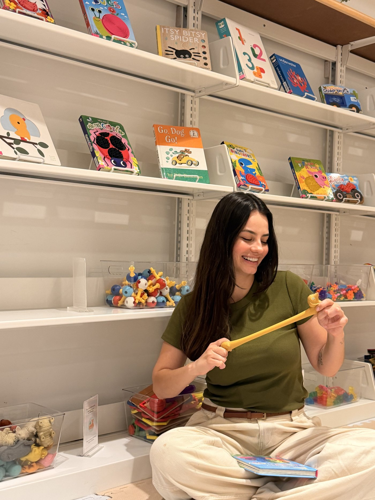
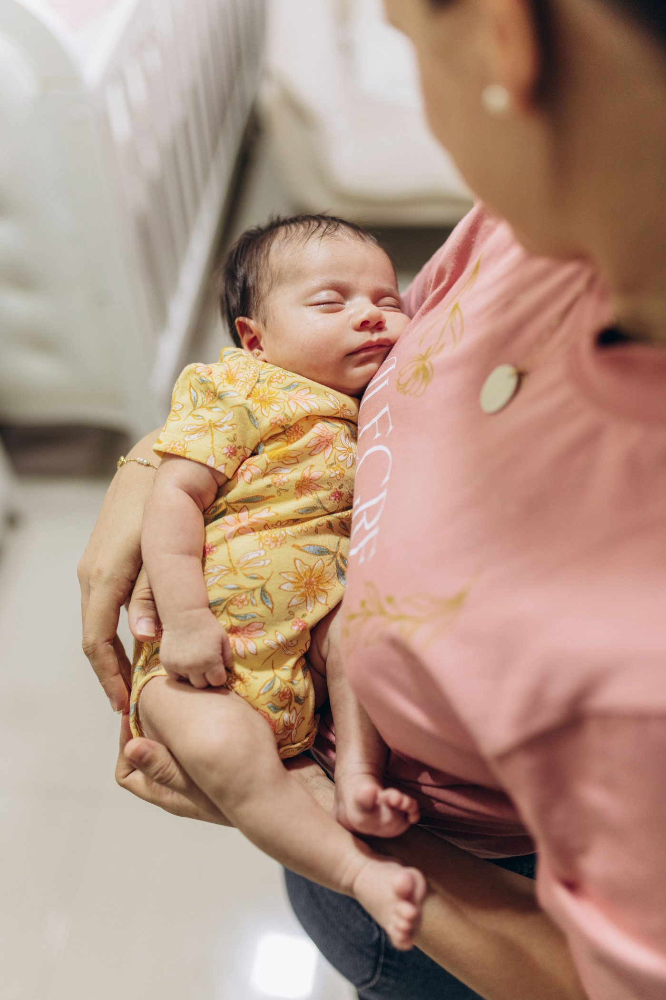
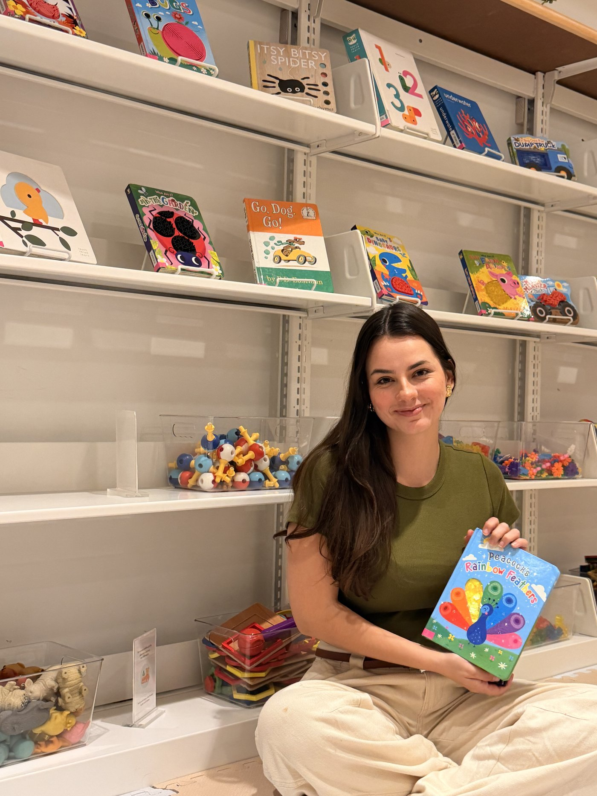

Amor e limite não são opostos. Duda Bincoleto ajuda famílias a construir uma rotina estruturada sem abrir mão da conexão emocional, desde a gestação até os primeiros anos.
"Vínculo sem estrutura gera caos. Estrutura sem vínculo gera rigidez. Afeto não exclui estrutura."
Pedagoga formada pela UNESP de Marília, Duda estuda o desenvolvimento de bebês desde o primeiro ano da graduação: pesquisas, projetos de extensão e coautoria em capítulo de livro publicado sobre o tema.
Intercambista nos Estados Unidos, aprofundou sua formação com especializações de nível internacional na University of Colorado Anschutz e na Yale University. Para Duda, aprender nunca para: cada cultura nova traz técnicas diferentes, e é dessa troca contínua que nasce um trabalho mais completo com as famílias.
Conhecer a trajetória completaDo primeiro atendimento à imersão completa dentro de casa, cada família encontra o formato certo para sua fase.

Atendimentos individuais e pacotes de acompanhamento para gestantes e famílias de 0 a 18 meses. O ponto de entrada da jornada com Duda.

45 dias na casa da família, com protocolo completo de rotina, vínculo e estrutura emocional, além do treinamento da babá definitiva ao final.

Presença nas redes sociais, YouTube, TikTok, palestras e no blog, levando a filosofia de vínculo e rotina para além do atendimento individual.
Eu estava completamente perdida com os horários e o sono do meu bebê. A Duda me ajudou a entender os sinais dele e organizar uma rotina que realmente funcionasse para a nossa família. Fez muita diferença!
Como mãe de primeira viagem, eu tinha mil dúvidas. A Duda sempre explicava tudo de um jeito simples e sem julgamentos. Hoje me sinto muito mais segura para entender e cuidar do meu bebê.
Estávamos exaustos e não sabíamos mais o que fazer. Com as orientações da Duda, conseguimos organizar os horários e melhorar muito o sono do nosso bebê. Foi um alívio para toda a família!